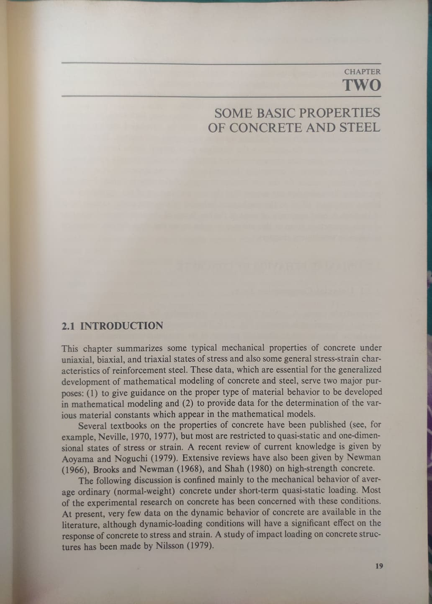

Font
Table of Contents
1. Good Fonts
Helvetica Neue
Baskerville
Saw it in the book "Plasticity in Reinforced Concrete" [Figure] (which is in the campus library) and got fascinated with typesetting for a while. Later I used that font for our Bachelor's final year project report.

Figure 1: Plasticity in Reinforced Concrete - Chapter 2
Gill Sans for body and Warnock Pro for titles
Abhaya Libre for titles
From https://apreshill.github.io/palmerpenguins-useR-2022/#/title-slide
2. Articles
2.1. Is there a perfect maths font
- People are more likely to believe what is said if it is in Baskerville
- Similar is the effect with Computer Modern which is the default font for \LaTeX
- Microsoft introduced a new font for Equation Editor: Cambria which is better than using Times New Roman
Author proposes an addition to 36 methods of mathematical proof
When it’s too beautifully typeset to be wrong: proof by LaTeΧ.
2.2. The Best Fonts for Ebook Readers
(Link)
Picking the right font for your Kindle or Nook can enhance your reading experience. Some fonts are easy on the eyes, some have a ton of personality, and some tell stories of their own. Here are some fonts the experts suggest for your devices.
Mark Wilson at Fast Company asked several book and typeface designers what fonts give the most authentic book experience. Anna Thompson, a book designer at Penguin Random House, and Robert Slimbach, the principal type designer at Adobe Systems, both suggest Baskerville. It’s easy to read, fatigues the eyes less over long sessions, and it looks classy. Baskerville may not work well for some devices, however, like a smartphone. Because of that, type designer Tobias Frere-Jones suggests a lower contrast, thicker, serifed font like Georgia. It renders clearly on all screen sizes, but still has enough personality to make it feel like you’re reading an actual book.
If you want something with a bit more character, Thompson and Charles Bigelow, co-creator of the Lucida and Wingdings typefaces, suggest Palatino. Of course, the best font will always be whatever you like using the most. But if you’re not sure, hopefully these suggestions will help you find something you love.